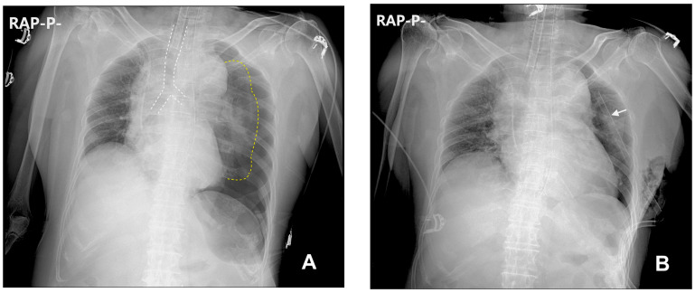
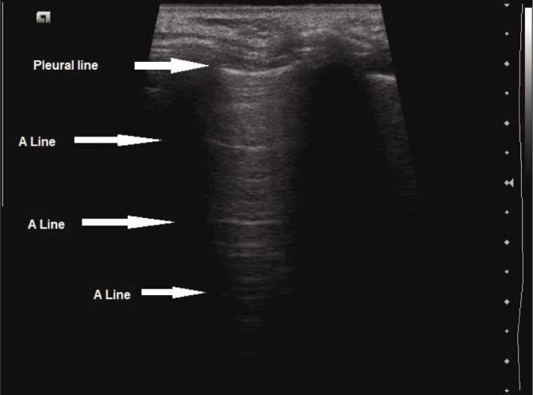
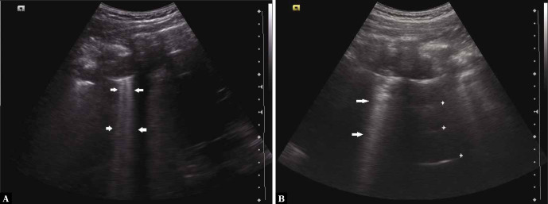
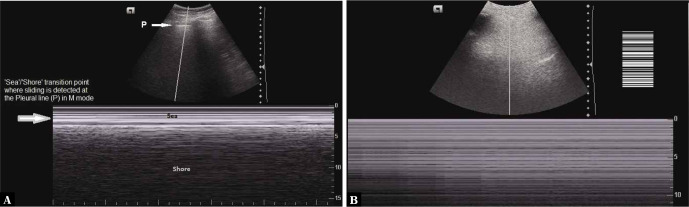

主訴流程
Dyspnea ｜ 呼吸困難 · Shortness of Breath 筆記更新 2026-07-27· 整理狀態：可用
加入閱讀清單 其他名稱 6 Dyspnea · 呼吸困難 · 喘 · Shortness of breath · SOB · Breathlessness
一句話總覽
被 call「病人喘」的時候，整套流程只在回答三件事：① 現在會不會死 （呼吸衰竭／Shock ）、② 是肺、是心、還是都不是 （血液／代謝／神經肌肉／心因性）、③ 要不要現在插管 。
第三題是臨床決定 ，不是等血氣回來才決定的；第二題最常錯在「聽診乾淨就以為不是肺、也不是心」。
Can't-miss — 漏掉會死人
這一格永遠先讀。沒排除完不准往下走。
不能漏
一眼線索
立刻做什麼
Tension Pneumothorax↗ 張力性氣胸
單側呼吸音消失＋叩診過度反響 、氣管偏向對側、頸靜脈怒張、血壓掉；有外傷、穿刺或正壓通氣史臨床診斷，不等 CXR ：立刻針刺減壓（成人第 5 肋間、腋中線稍前方，針長 ≥ 8 cm；小體型 5 cm ），再放 Chest tube drainage
Massive Pulmonary embolism 大量肺栓塞
突發喘＋低血壓、心搏快、肺部聽診乾淨 、單側下肢腫、近期手術／臥床／惡性腫瘤
不穩 → 床邊 Echocardiography 看右心室擴大 即可決策；穩定 → CT pulmonary angiography (CTPA)
急性肺水腫（Heart failure ）／若已進展為 cardiogenic shock 見 Shock
坐直才喘、冒冷汗、粉紅泡沫痰 、兩側 crackles、S3、頸靜脈怒張
坐起＋氧氣＋non-invasive ventilation (NIV)（限血壓撐得住者；已低血壓／心因性休克不上 NIV，改備插管與升壓藥） ；靜脈利尿劑；血壓夠才給硝酸鹽；EKG 找 ACS
上呼吸道阻塞／Anaphylaxis↗
Stridor 、聲音改變、流口水吞不下、舌與嘴唇腫、蕁麻疹、暴露史不要躺平、不要鎮靜 ；anaphylaxis 立刻大腿外側肌肉注射 adrenaline ；同時叫最有經驗的人備困難氣道
Severe Asthma↗ ／COPD↗ 急性發作瀕臨呼吸衰竭
講不出完整句子 、輔助呼吸肌、silent chest 、意識變差、PaCO₂ 由低轉「正常」 吸入型支氣管擴張劑＋全身性類固醇；氧氣目標：氣喘 94–98%；只有 COPD／有 CO₂ 滯留風險者才是 88–92% ；NIV；同步準備插管
ACS （anginal equivalent）糖尿病、老年、女性可以完全沒有胸痛 ，只表現為喘、冒冷汗、噁心、突然「撐不住」10 分鐘內 EKG （見 EKG ischemia ）＋ Troponin
代謝性酸中毒的代償性喘
深而快 的呼吸（Kussmaul）、肺部乾淨、SpO₂ 正常；DKA、salicylate 中毒、敗血症、尿毒背景Arterial blood gas ＋ 血糖、ketone、lactate、anion gap——治的是酸不是肺
還有三個會被「喘」蓋掉的 ：Cardiac tamponade （頸靜脈怒張＋心音遠＋pulsus paradoxus，床邊超音波一眼）、Aortic dissection （可經由心包填塞或急性主動脈瓣逆流而以喘表現，完整對照見 Chest pain↗ ）、ARDS （有誘因＋頑固低血氧＋兩側浸潤，要同時排除純心因性）。
到床邊的前 5 分鐘
看 ：呼吸速率與型態、SpO₂ 以及「在多少氧氣下」 、輔助呼吸肌與三凹、能不能講完整句子 、tripod position（前傾撐手）、意識、頸靜脈、末梢與發紺、兩側胸廓起伏是否對稱。
問 ：什麼時候開始、多快 ？躺平會不會更喘 ？有沒有胸痛、發燒、單側腿腫、近期手術或臥床？
做 ：氧氣（滴定，不是全開 ）、監視器、EKG、Chest X-ray↗ 、Arterial blood gas 、CBC、生化與 lactate、Troponin 、BNP、床邊超音波。
判 ：先答「要不要現在插管 」，再回頭找病因。末梢冰冷花斑就當 Shock 處理。
鑑別架構圖
⚠ ＝ can't-miss。
flowchart LR
C(["Dyspnea<br/>呼吸困難"])
C --> AW["氣道 Airway"]
C --> PAR["肺實質"]
C --> VAS["肺血管"]
C --> PLE["胸壁・胸膜"]
C --> CAR["心臟"]
C --> NON["非心肺"]
AW --> AW1["⚠ 上呼吸道阻塞・Anaphylaxis<br/>Asthma・COPD 急性發作<br/>異物・腫瘤壓迫"]
PAR --> PAR1["Pneumonia・ARDS<br/>肺水腫・肺塌陷<br/>間質性肺病"]
VAS --> VAS1["⚠ Pulmonary embolism<br/>肺高壓・肺血管炎"]
PLE --> PLE1["⚠ Tension pneumothorax<br/>Pleural effusion・血胸<br/>肋骨骨折・胸廓變形"]
CAR --> CAR1["⚠ 急性肺水腫・ACS<br/>⚠ Cardiac tamponade<br/>心律不整・瓣膜疾病"]
NON --> NON1["⚠ 代謝性酸中毒・敗血症<br/>Anemia・神經肌肉無力<br/>甲亢・肥胖・心因性"]
classDef hub fill:#263238,stroke:#000,color:#fff,font-weight:bold
classDef sys fill:#eceff1,stroke:#607d8b,color:#263238,font-weight:bold
classDef leaf fill:#f5f5f5,stroke:#9e9e9e,color:#263238
class C hub
class AW,PAR,VAS,PLE,CAR,NON sys
class AW1,PAR1,VAS1,PLE1,CAR1,NON1 leaf
筆記中的流程與關係 為什麼要把「肺」拆成四支
呼吸是四個獨立環節，任何一環壞掉都表現成喘，但處置完全不同 ：氣道 通不通 → 打開它；肺實質 能不能交換 → 治病灶；肺血管 有沒有血流過去 → 抗凝或溶栓；胸壁與胸膜 能不能膨脹 → 引流或減壓。第五支心臟 是幫浦，第六支非心肺 是「肺是好的，只是被要求做更多工」——最容易整組被忘掉，也是「聽診乾淨」的主要來源。
喘＋肺部聽診乾淨：最有價值的組合
聽診正常只排除了一件事
喘得很明顯但胸部聽起來乾乾淨淨，不是「應該沒什麼事」，而是你剛拿到了整場最有鑑別力的一條資訊 ：呼吸音異常來自氣道與肺泡裡有東西 （痰、水、氣、塌陷），聽診乾淨只排除了這一類。
完全不排除 ：血管（Pulmonary embolism ）、血液（Anemia 、CO 中毒）、代謝（酸中毒代償）、幫浦（Cardiac tamponade 、右向左分流）、神經肌肉（吸不進氣只會聲音變小 ）、早期 ARDS（症狀先於影像與聽診 ）。心因性／過度換氣也在這一格，但排最後一名 。
喘但聽診乾淨
為什麼聽不到
抓它的動作
Pulmonary embolism 血流被擋住，空氣進出正常
機率分層 → CTPA；不穩看右心
代謝性酸中毒（DKA、salicylate、敗血症、尿毒）
肺是代償器官 ，不是病灶
Arterial blood gas ＋ anion gap ＋ 血糖／ketone／lactate
Anemia 攜氧量不足，肺功能完好
CBC——最便宜也最可逆的一個
早期 ARDS
影像與聽診落後於低血氧
追 SpO₂／PaO₂ 趨勢與危險因子，不要等 CXR 變白
神經肌肉無力（重症肌無力、Guillain-Barré）
通氣量不足，但氣道與肺泡是正常的
測肺活量與吸氣負壓 ——不要看 SpO₂
病史 History
第一層：多快發生的
慢性喘的病人突然變喘，要當作急性事件重新查一次。 最常見的是原病惡化，但氣胸、PE、感染、心律不整都會疊加在慢性病上，很容易被「他本來就喘」帶過去。
第二層：體位與時間——最便宜的定位工具
描述
名稱
定位價值
平躺加重，要墊高幾顆枕頭才睡得著
Orthopnea 左心衰竭最典型；但橫膈無力（雙側橫膈麻痺）、大量腹水、嚴重肥胖也會 。要問「幾顆枕頭」並跟平常比
入睡後被喘醒、必須坐起來、要好一陣子才緩解
Paroxysmal nocturnal dyspnea (PND) 對左心衰竭的特異性比 orthopnea 高 。氣喘的夜咳醒是另一回事——多半伴 wheeze，且支氣管擴張劑有效
坐直或站起來才喘，躺下反而好 Platypnea （合併姿勢性血氧下降 ＝ orthodeoxia）罕見但指向極明確：right-to-left shunt —— patent foramen ovale (PFO)／atrial septal defect、hepatopulmonary syndrome、肺基底部動靜脈畸形。做氣泡對比超音波
只有側躺某一邊才喘
Trepopnea 大量單側胸水、單側肺病灶、部分心衰
第三層：把鑑別拉開的關鍵問題
這四題不問，整條路可能走錯
① 用藥史 ——β-blocker（可誘發支氣管痙攣）、aspirin／NSAID、amiodarone 與化療藥（藥物性肺病）、病人有沒有自己停掉利尿劑或吸入劑 、抗凝藥有沒有漏吃（見 DOAC ）。
② 基礎心肺功能 ——「他平常的 SpO₂ 是多少、平常走多遠會喘」：沒有基準線就無法判斷現在是不是變差 ，慢性 CO₂ 滯留者尤其如此。
③ 免疫狀態與住院史 ——免疫低下者的肺炎可以不發燒，CXR 也可以乾淨。④ 有沒有既有診斷被拿來解釋一切 ——「他本來就有氣喘」是漏掉 PE 與心衰最常見的一句話。
理學檢查 PE
喘的 PE 有一個順序：先看 （呼吸做得辛不辛苦）、再摸 （氣管與頸靜脈）、才聽 。聽診放最後，因為它最不敏感。
要做的 PE
陽性代表
呼吸速率 （真的量滿一分鐘）正常 12–20；qSOFA 用 ≥ 22，> 24 是明確警訊 。由快轉慢而病人沒有變好 ＝ 快停了 ，這是最被低估的惡化訊號
呼吸型態
Kussmaul （深且快）→ 代謝性酸中毒；Cheyne-Stokes → 心衰或中樞病變；淺快 → 限制性生理或疼痛
能講幾個字 只能講單字或講不出話 ＝ 瀕臨呼吸衰竭，不需要任何數據就能決定插管
輔助呼吸肌、三凹、胸腹反向運動 、tripod position
橫膈已經疲乏；paradoxical breathing 是插管訊號；尊重他自己選的姿勢 ，不要硬壓平
氣管位置 偏離患側 → tension Pneumothorax↗ 、大量胸水；偏向患側 → 肺塌陷、肺纖維化
Wheeze vs Stridor
Wheeze 兩側 → Asthma↗ ／COPD↗ ，也可能是 cardiac asthma ；單側固定 → 異物或腫瘤。Stridor 以吸氣期為主 ＝ 上呼吸道，聲門或以上
Crackles
兩側基部細碎 → 肺水腫；乾燥如撕魔鬼氈（velcro）→ 間質性肺病；局部粗糙 → Pneumonia
叩診 ＋ 呼吸音減弱或消失
過度反響 → 氣胸、嚴重氣腫；濁音 → Pleural effusion↗ 、consolidation。Silent chest 不是好轉，是快沒氣了
頸靜脈壓 升高 → 右心負荷：Heart failure 、tension pneumothorax、Cardiac tamponade 、massive PE、Constrictive pericarditis ；扁平＋喘 → 想低血容或純肺實質
下肢（一定要掀被子看兩側 ）
兩側對稱凹陷性水腫 → 容積過載；單側不對稱腫脹＋壓痛 → DVT → PE
心音（見 Cardiac auscultation ）
S3 → 容積負荷；新雜音 → 急性瓣膜逆流（想 Infective endocarditis ）；心音遠＋pulsus paradoxus → 填塞或嚴重氣喘；loud P2 → 肺動脈高壓
末梢與皮膚
冰冷花斑 → Shock ；中央性發紺 → 嚴重低血氧或右向左分流；蕁麻疹／血管性水腫 → Anaphylaxis↗

A：左側 tension pneumothorax，患側胸腔過度透亮、肺塌陷且左橫膈下壓，氣管與縱膈被推向右側；B：緊急減壓與胸管置放後明顯改善。張力性氣胸仍是臨床診斷，不能為了等 X 光延誤減壓 。Source: Choi et al., Medicina 2023, Figure 2 （CC BY 4.0）。
與上圖對照：左側 cardiogenic pulmonary edema 呈中心性肺門周圍陰影、peribronchovascular cuffing 與 Kerley B lines；右側是較斑片、周邊的 noncardiogenic edema／ARDS。急性心因性肺水腫還要一起找心臟擴大、cephalization 與雙側胸水。Source: Mihailescu et al., Diagnostics 2023, Figure 3 （CC BY 4.0）。
第一批檢查 Initial Workup
D-dimer 的使用前提：先分層，再決定要不要驗
D-dimer 是排除工具 ，全部價值來自「事前機率低／中 ＋ 陰性 」。先做臨床機率分層 ：Wells（DVT 徵象、心搏過速、近期手術或臥床、VTE 病史、咳血、惡性腫瘤、PE 是否為最可能的診斷 ）；PERC 用在機率本來就極低、想連驗都省掉的族群。
高機率不驗 D-dimer，直接排 CTPA ——陰性也不能讓你放心，只換來延誤。低機率也不能亂驗 ：老年、懷孕、感染、術後、惡性腫瘤、住院本身都會讓它升高，一驗就被偽陽性帶著跑一連串影像。
≥ 50 歲 改用年齡調整界值 ＝ 年齡 × 10 µg/L FEU 可減少偽陽性——僅限「非高機率」病人，且僅適用以 FEU（標準界值 500 µg/L）報告的試劑；報 DDU 的實驗室要先換算 。

正常含氣肺的 B-mode：胸膜線下方出現等距、水平重複的 A-lines；是否有 lung sliding 必須在即時影像觀察，單張靜態圖本身不能證明。

B-lines 從胸膜線垂直延伸到畫面底部、會抹掉 A-lines；左為離散 B-lines，右為 confluent B-lines。多區、雙側 B-lines 支持間質／肺泡水分增加，但不是心因性肺水腫專屬。

M-mode：左側正常 lung sliding 形成 seashore sign；右側胸膜線上下皆為平行線的 barcode／stratosphere sign，表示該點沒有 sliding。它支持氣胸，但主支氣管插管、胸膜沾黏與 apnea 也可能沒有 sliding。三圖 Source: Allinovi et al., J Ultrason 2021, Figures 3, 7, 6 （CC BY-NC-ND 4.0）。
鑑別診斷
致命那一層＝頂部的 can't-miss 表，不重複。以下是排除致命之後的鑑別。
常見
少見但要想到
疾病
支持線索
排除方法
神經肌肉無力（myasthenia gravis、Guillain-Barré、ALS）
平躺更喘、聲音變小、吞嚥困難、四肢無力
肺活量與吸氣負壓 ——不要看 SpO₂
間質性肺病／肺纖維化
長期漸進、velcro crackles、杵狀指
HRCT、肺功能
肺動脈高壓
用力時暈厥、loud P2、右心衰徵象
Echo → 右心導管
限制型生理：Constrictive pericarditis ／Restrictive cardiomyopathy ／HCM
頸靜脈怒張但肺乾淨 、腹水多於下肢水腫；HCM 則是用力時喘或昏厥＋動態性雜音
Echo、CT／MRI
Infective endocarditis 造成急性瓣膜逆流發燒 ＋ 新雜音 ＋ 突發肺水腫
血液培養 ×3、echo
CO 中毒、methemoglobinemia
SpO₂ 與臨床不符、給氧無反應、燃燒或用藥暴露
Co-oximetry
甲狀腺功能亢進／甲狀腺風暴
心搏極快、體重減輕、顫抖、Atrial fibrillation
TSH、free T4
右向左分流（PFO、hepatopulmonary syndrome）
Platypnea-orthodeoxia 、肝硬化氣泡對比超音波
惡性腫瘤相關（惡性積水、淋巴管轉移、氣道壓迫）
腫瘤病史、反覆抽水、體重減輕
影像 ＋ 胸水分析
喘的病人變躁動或變嗜睡，第一個想的不是精神狀態
躁動 ＝ 缺氧，直到證明不是。嗜睡 ＝ CO₂ 累積，直到證明不是。 正確反應是檢查氧合與通氣、準備氣道 ，不是叫鎮靜劑——鎮靜會直接拿掉病人最後的呼吸驅動。
氧合與通氣都確認沒問題之後，才輪到 Delirium （感染、藥物、電解質）與代謝性原因（低血糖、低血鈉、Hypercalcemia ——腫瘤或 Multiple Myeloma 病人要驗校正鈣值）。
處置分流 Disposition
插管是臨床決定，不是數字決定
「等血氣結果再決定插不插管」是錯的：血氣描述的是剛剛那幾分鐘 ，等報告回來的那段時間病人可能已經停止呼吸。
看到這些就插，不要等任何數據 ：意識變差到保護不住呼吸道、胸腹反向呼吸 、只能講單字或講不出話、呼吸速率由快轉慢而病人沒有變好 、給了最大支持仍持續惡化、心跳或血壓開始掉、上呼吸道阻塞正在進展。
反過來也成立：PaCO₂ 很高但意識清楚、講得出話、對 NIV 有反應的慢性 CO₂ 滯留者，不該只因為一個數字就插管 ——同一個 PaCO₂ 在急性重度氣喘是紅色警報，在慢性 COPD 可能是他的日常。要比的是趨勢與病人，不是絕對值。
支持方式
最適合
不適合／要小心
鼻導管／面罩
單純低血氧、清醒、能自理
一般急症病人目標 94–98%；只有 COPD 與有 CO₂ 滯留風險者才是 88–92% ，都不是開到 100%
High-flow nasal cannula (HFNC)
低血氧型（type I）呼吸衰竭 、肺炎；流量高又能講話進食對排 CO₂ 的幫助有限；用了就要訂下明確的再評估時間 ，不能拿它拖延插管
NIV — CPAP
急性心因性肺水腫 （撐開肺泡、同時降前後負荷）低血壓／心因性休克、意識不清、嘔吐、臉部外傷
NIV — bilevel（BiPAP）
COPD 急性發作合併高碳酸血症與呼吸性酸中毒 （經初步治療＋控制性給氧後 pH 仍 < 7.35 且 PaCO₂ > 6.5 kPa ≈ 49 mmHg ）、肥胖低通氣。pH < 7.25 ＝ 重度，NIV 失敗率高，同步請 ICU 評估插管 同上，再加：氣道保護不住、上呼吸道阻塞、大量分泌物、未引流的氣胸
插管與機械通氣
上述任一臨床指標
氣喘與 COPD 插管後注意 auto-PEEP ；可接受較高的 CO₂（permissive hypercapnia）換取較低的氣道壓
去向
條件
立即急救／備插管 意識變差、講不出話、胸腹反向呼吸、給氧後 SpO₂ 仍低、血壓掉、stridor、疑似張力性氣胸
ICU
需要 NIV 或 HFNC 但反應不明確、需升壓藥、massive PE、瀕臨呼吸衰竭的氣喘、pH 持續下降、需頻繁追血氣
住院
需要氧氣才能維持、新診斷的心衰或肺炎且無法口服、氣胸放了胸管、原因未明但活動時會掉血氧
門診追蹤／回家
室內空氣下 SpO₂ 正常且走動後不掉 、原因明確且可口服治療、有人陪伴、能回診
禁忌與陷阱
絕對不可
情境
絕對不可
為什麼
該做什麼
COPD↗ 急性發作、慢性 CO₂ 滯留者為了追 SpO₂ 100% 而給高濃度氧
V/Q mismatch 惡化與 Haldane effect 使 CO₂ 上升 → 呼吸性酸中毒、CO₂ narcosis；高濃度氧與較高死亡率相關
滴定到 88–92% ；持續惡化就上 NIV，而不是把氧氣關掉
疑似 tension Pneumothorax↗ 尚未減壓
直接上正壓（NIV 或插管後 bagging）
正壓把更多氣體打進胸腔，張力瞬間惡化、靜脈回流中斷 → 心跳停止
先減壓再給正壓 ；臨床懷疑就動手，不等 CXR
疑似上呼吸道阻塞（stridor、會厭炎、血管性水腫、異物）
讓病人躺平、先給鎮靜安撫、或貿然用壓舌板檢查咽喉
他自己維持的姿勢與呼吸驅動就是最後的代償，一移除就完全阻塞
讓他保持自己選的坐姿 ；叫最有經驗的人，備困難氣道與外科氣道
臨床高度懷疑 Pulmonary embolism
拿 D-dimer 當排除工具
高機率下陰性不足以排除，只換來延誤
直接排 CTPA ；不穩就床邊超音波看右心，不要把不穩的病人推去做影像
高機率 PE、等影像期間
因為「還沒確診」而完全不給抗凝
等待期間栓塞可能繼續形成
出血風險可接受就先開始抗凝 ，影像回來再調整（見 DOAC ）
急性肺水腫
「先補一點水看看」而給大量輸液
已經是壓力或容積過載，輸液直接讓肺更濕
坐起、氧氣、NIV、靜脈利尿劑；血壓夠才加硝酸鹽；無尿且利尿劑無效考慮 Dialysis
喘而躁動的病人
為了讓他配合檢查而給鎮靜劑
躁動多半是缺氧的表現，鎮靜會拿掉呼吸驅動
先處理氧合與通氣；真需要鎮靜就在能立刻插管的條件下 做
重度氣喘而 PaCO₂「正常」
因為數字正常而放心觀察
嚴重氣喘本該過度換氣；PaCO₂ 從低轉正常代表呼吸肌已經撐不住
視為即將呼吸衰竭 ，升級治療並備插管
Anaphylaxis↗ 把抗組織胺或類固醇當主要治療、或延後 adrenaline
延誤 adrenaline 是死亡的主因
大腿外側肌肉注射 adrenaline ，其餘皆為輔助
大量胸水引流
一次抽到「病人舒服為止」而不設上限
Re-expansion pulmonary edema
單次引流 < 1.5 L、分次進行 ，過程中出現胸痛或劇咳即停（見 Chest tube drainage ）
常見錯誤
沒有真的量呼吸速率 ——它是最能預測惡化的 vital sign，也是最常被照抄成「16」的一個。SpO₂ 正常就放心 ——PE、代謝性酸中毒、貧血、早期呼吸肌疲乏都可以 SpO₂ 正常；而 CO₂ 累積，SpO₂ 永遠不會反映 。CXR 正常就排除 ——PE、氣喘、上呼吸道阻塞、貧血、酸中毒、早期肺水腫的 CXR 都可以是乾淨的。
相關連結
 與上圖對照：左側 cardiogenic pulmonary edema 呈中心性肺門周圍陰影、peribronchovascular cuffing 與 Kerley B lines；右側是較斑片、周邊的 noncardiogenic edema／ARDS。急性心因性肺水腫還要一起找心臟擴大、cephalization 與雙側胸水。Source: Mihailescu et al., Diagnostics 2023, Figure 3（CC BY 4.0）。
與上圖對照：左側 cardiogenic pulmonary edema 呈中心性肺門周圍陰影、peribronchovascular cuffing 與 Kerley B lines；右側是較斑片、周邊的 noncardiogenic edema／ARDS。急性心因性肺水腫還要一起找心臟擴大、cephalization 與雙側胸水。Source: Mihailescu et al., Diagnostics 2023, Figure 3（CC BY 4.0）。